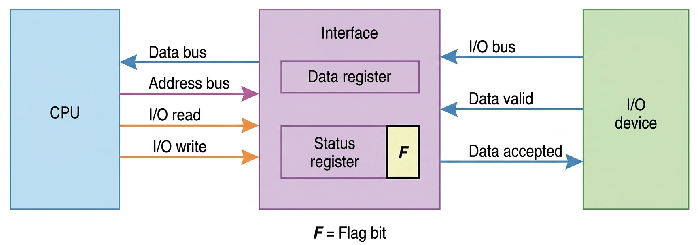
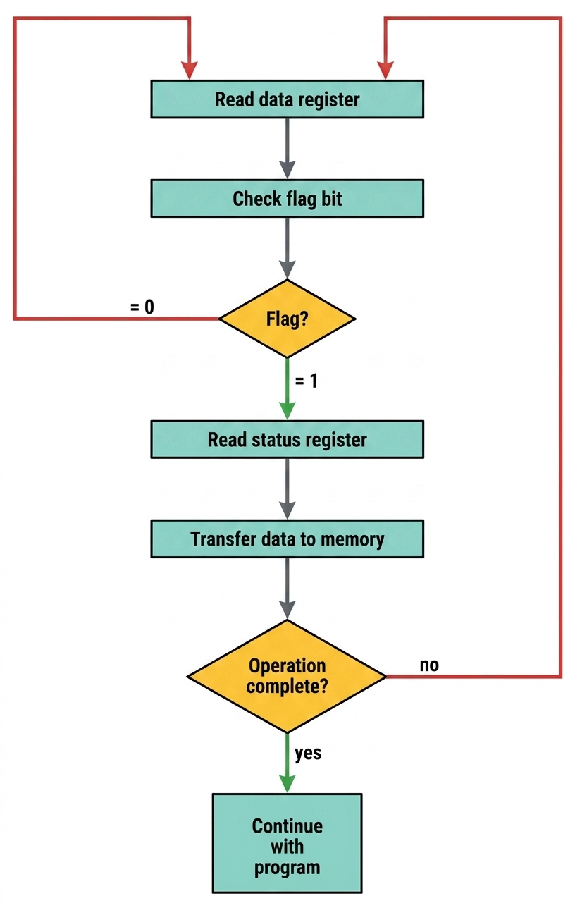

Understanding CPU-Peripheral Data Transfer Methods
Transfer modes define how the CPU coordinates with peripheral devices to move data into or out of memory and registers. Each mode represents a different approach to handling the speed mismatch between fast CPUs and slower I/O devices.
| Mode | CPU Involvement | Efficiency | Best For |
|---|---|---|---|
| Programmed I/O | Continuous monitoring | Low ⭐ | Simple, infrequent transfers |
| Interrupt I/O | On-demand response | Medium ⭐⭐ | Moderate transfer rates |
| Direct Memory Access | Minimal (initial setup) | High ⭐⭐⭐ | High-speed bulk transfers |
All modes use flags to coordinate between fast CPUs and slow peripherals
Efficiency increases from PIO → Interrupt → DMA
Hardware and software complexity grows with efficiency gains
In Programmed I/O, the CPU is solely responsible for initiating and overseeing the entire data transfer operation. The CPU must constantly check the status of the I/O device before every data transfer.

The CPU checks the status register flag to detect data availability, reads the data from the interface data register, and clears the flag to allow the next transfer.
The interface acts as a mediator, storing incoming data in the data register, setting the status flag, and coordinating handshake signals like data valid and data accepted.
The I/O device generates data and places it on the I/O bus, activates the data valid signal, and waits for acknowledgment before sending the next byte.

Interrupt I/O is an enhanced transfer mode designed to overcome PIO's efficiency problems by allowing the CPU to perform other tasks while waiting for slow I/O operations to complete.
The CPU executes programs without monitoring flags, deviating only when an interrupt occurs. It responds by saving the return address to a memory stack and branching to an I/O service routine.
The interface informs the computer when it is ready for data transfer by setting a flag bit. This action triggers the interrupt facility, signaling the processor to pause its current program.
This routine processes the required I/O transfer after the CPU identifies the branch address. Once finished, control returns to the original program using the return address stored previously in the stack.
The interrupting source provides the computer with specific branch information known as the interrupt vector, which identifies the first address or a pointer to the service routine.
The branch address for the service routine is assigned to a predetermined, fixed location in memory, rather than being supplied by the interrupting device.
DMA is the most efficient transfer mode for high-speed devices. It allows peripherals to transfer data directly to/from memory without continuous CPU involvement.
Specialized hardware that manages data transfers independently of the CPU
DMA controller temporarily takes over system bus to transfer data directly
Ideal for disk drives, graphics cards, and network interfaces requiring bulk transfers
Holds current memory address for transfer
Number of words remaining to transfer
Specifies transfer mode and direction